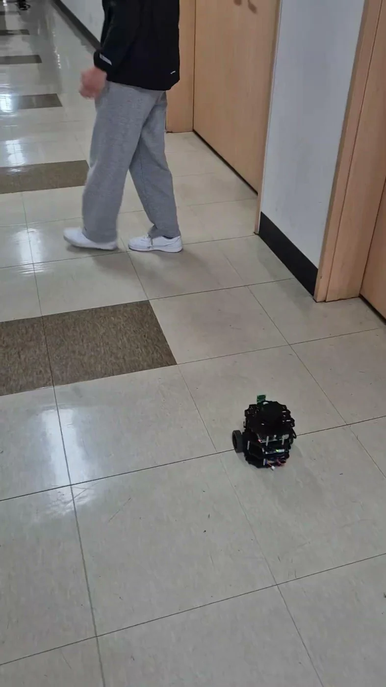
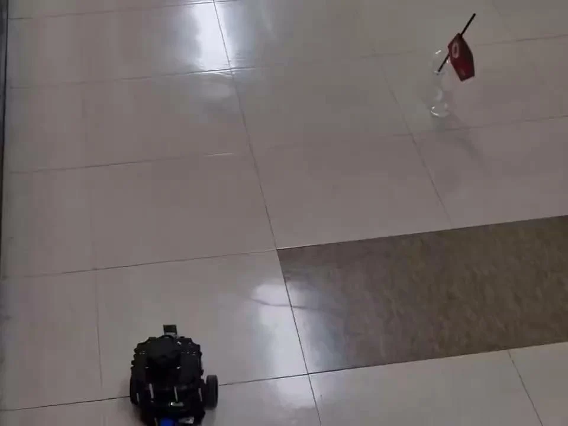
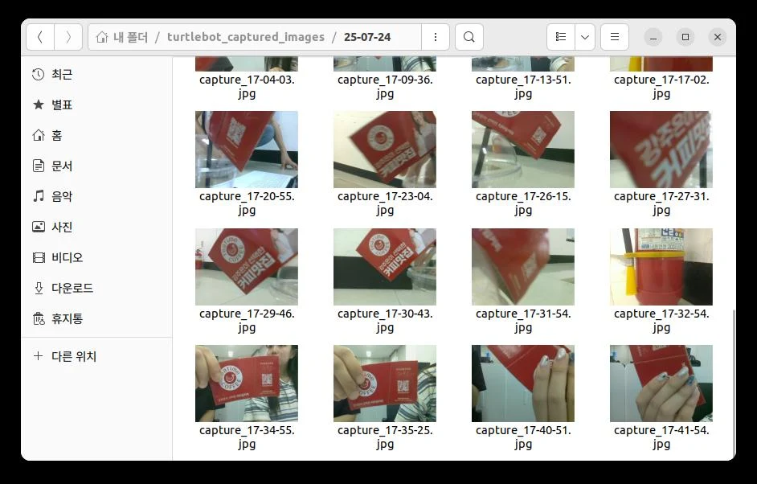
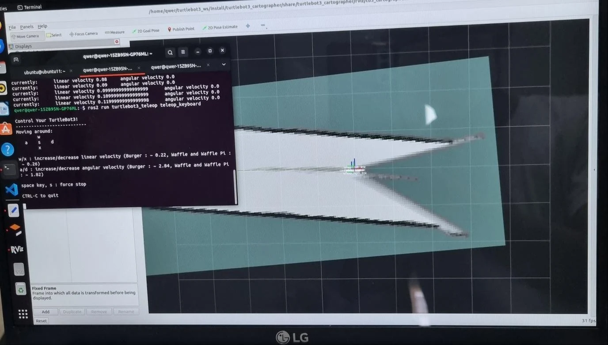
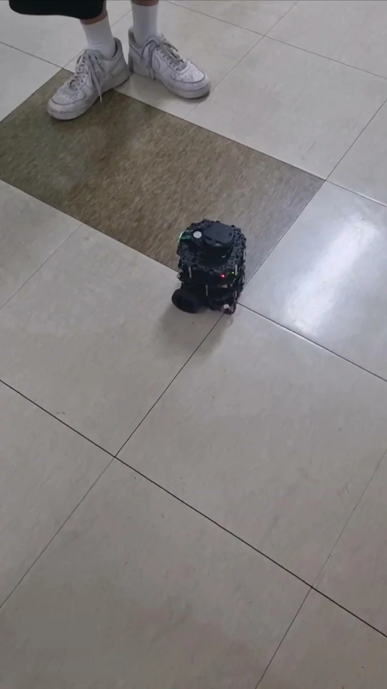
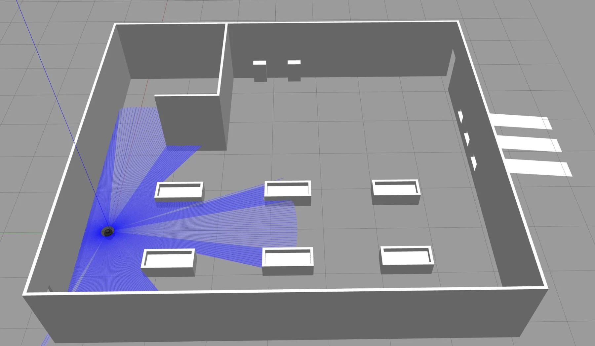
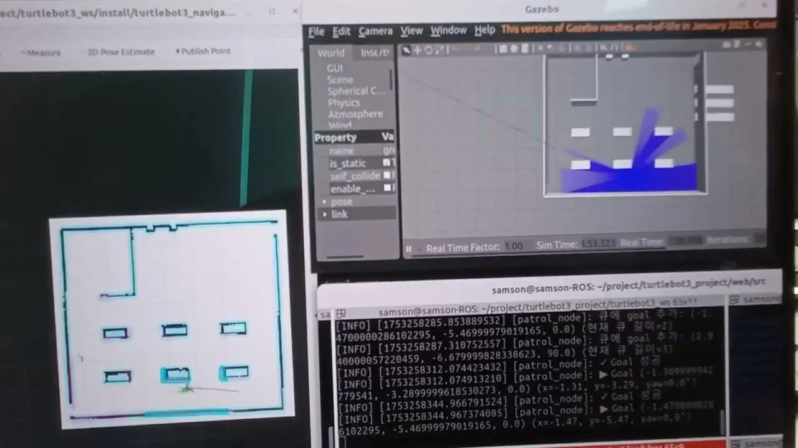
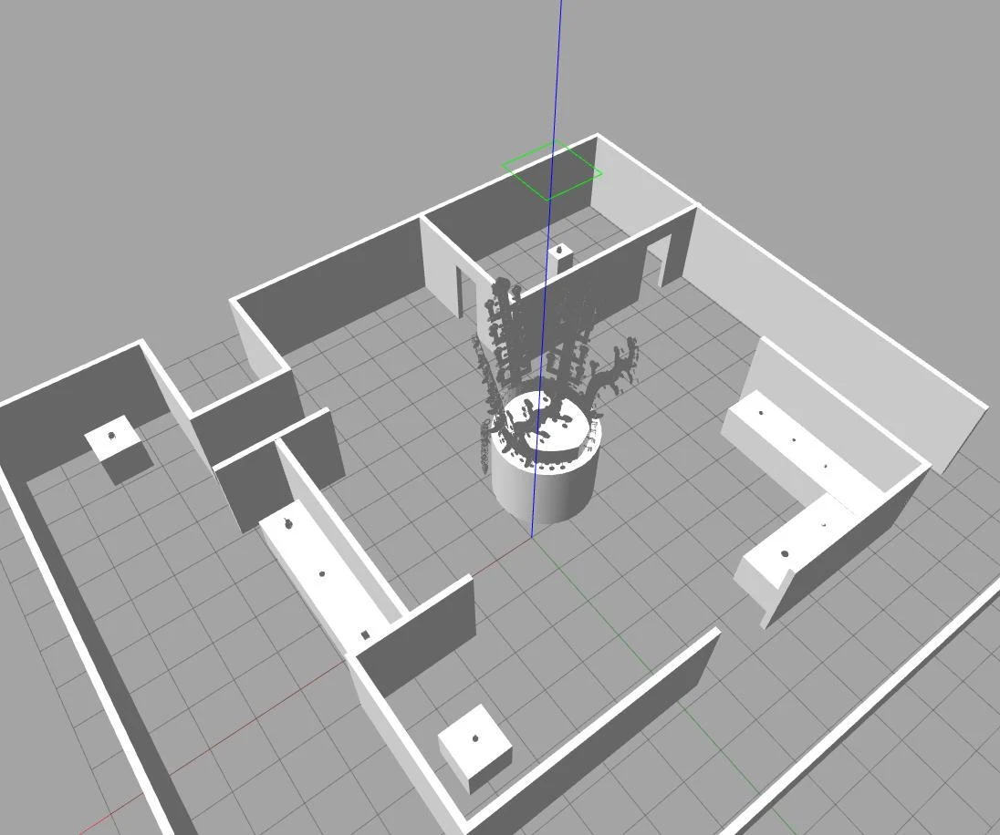
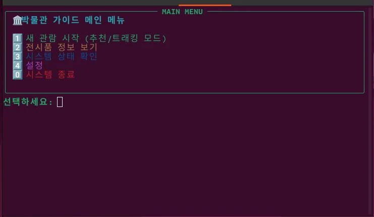
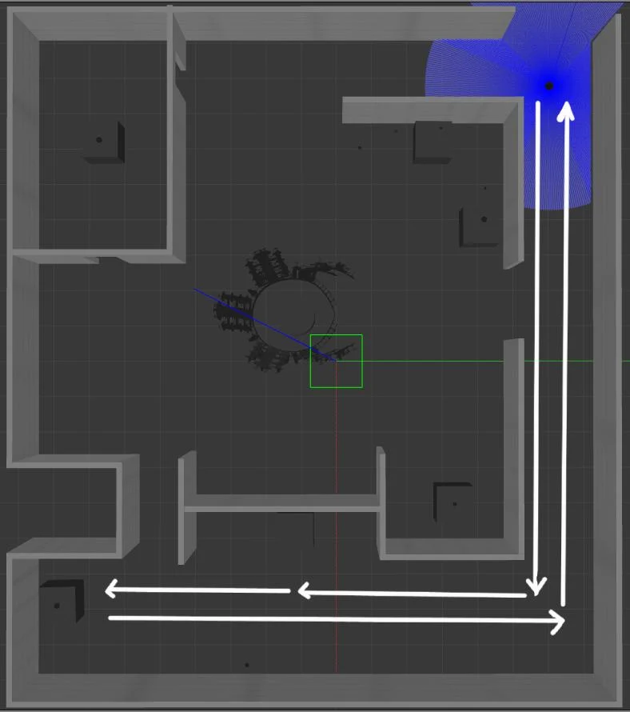

PROJECT SUPERVISION / JULY 2025
터틀봇 한 대에서,
네 가지 서비스로
2025년 7월 21~25일 공주대학교 천안캠퍼스. 프로젝트 지도·감독을 맡아 살펴본 순찰·반려로봇·스마트팜·박물관 안내의 네 가지 결과.
각자의 기능을
하나의 동작으로 묶은 일주일
교육생들은 TurtleBot3를 순찰원, 반려로봇, 운송로봇, 전시 가이드로 해석했습니다. 이 기간 최수길은 프로젝트 개발 지도와 기술 지원, 진행 상황 확인, 최종 발표 평가·피드백을 맡았습니다. 교육생이 구현한 결과와 그 과정에서 드러난 통합 문제를 정리합니다.

크게 보기 ↗4조 발표자료의 실제 이동 시연 장면. 본문 이미지는 각 팀의 원본 발표자료에서 추출했습니다.
- 역할
- 프로젝트 지도·감독
개발 지원과 최종 발표 피드백 - 공통 기반
- TurtleBot3 · ROS2 Humble
Ubuntu · Python · Gazebo - 결과 정리
- 네 팀의 계획·기술서·발표자료
7월 25일 최종 발표
TEAM 01 / ROS2 PROJECT
이상 물체를 발견하면 멈추고 기록하는 순찰로봇
1조 · 무인 순찰 / 엄민수 · 노정현 · 최유빈 · 이상원 · 김민준
1조는 정해진 구역을 반복해서 주행하다가 특정 물체를 발견하면 접근해 사진을 남기는 로봇을 만들었습니다. 단순히 장애물을 피해 가는 대신, 순찰 중 발견한 대상을 관찰하고 기록하는 작업을 주행 흐름에 넣었습니다.
프로젝트는 odom을 활용한 사각 경로 반복 주행과 카메라의 색상 기반 물체 인식을 나누어 시작했습니다. 7월 21일에는 역할 분담·저장소·센서 연결을 준비했고, 22일에는 탐지와 주행 로직을 합치고 캡처 이미지를 노트북에 저장하는 기능을 개발했습니다. 이후 실제 TurtleBot3에서 물체 정렬과 접근을 조정했습니다.

크게 보기 ↗1조 발표자료 11쪽의 실제 시연 화면. 순찰과 물체 감지를 연결한 장면입니다.

크게 보기 ↗1조 발표자료 12쪽. 촬영 결과를 파일로 남겨 확인하는 흐름을 보여 줍니다.
- 경로 반복 주행
- 특정 색상 물체 감지
- 정렬·접근·촬영
- 경로 복귀 및 순찰 재개
구현에서 다룬 문제
주행 중 물체를 찾았을 때 기존 이동을 멈추고, 카메라의 오차를 줄여 대상을 촬영하는 순서를 연결했습니다.
결과와 다음 과제
발표에는 경로 복귀가 소개되지만 기술서에는 수동 복귀도 기재되어 있습니다. 완전 자율 복귀가 일관되게 검증된 것으로 확대하지 않았습니다. 다양한 객체 인식과 능동적 회피는 후속 과제입니다.
TEAM 02 / ROS2 PROJECT
목소리와 표정에 반응하는 반려로봇 BOOGIE
2조 · 반려로봇 / 노홍림 · 박찬효 · 장하람 · 장윤호 · 김산
2조 BOOGIE는 정해진 패턴으로만 움직이는 로봇에 사용자와의 상호작용을 더했습니다. 자유롭게 움직이다가 “Hi Boogie”를 인식하면 멈추고, 카메라가 분류한 얼굴 표정에 따라 다른 움직임을 보인 뒤 다시 이동하는 구상입니다.
기술서에는 앱 버튼으로 음성 인식을 시작하고, 호출어를 감지한 뒤 카메라를 켜는 순서가 기록되어 있습니다. ROS2 Humble·Python·Vosk·YOLO를 활용하고, SLAM으로 만든 공간을 Gazebo에 연결했습니다. 노트북의 인식 결과를 무선 통신으로 TurtleBot3의 행동에 연결하는 통합 작업이 핵심이었습니다.

크게 보기 ↗2조 발표자료 5쪽의 매핑 화면. 로봇의 이동 환경을 준비하는 과정입니다.

크게 보기 ↗2조 발표자료 16쪽의 시연 영상 대표 화면. 실제 기체의 동작을 시험했습니다.
- 랜덤 이동
- 호출어 인식 후 정지
- 표정 분류에 따른 행동
- 랜덤 이동으로 복귀
구현에서 다룬 문제
각 파트가 따로 실행될 때와 합쳐졌을 때의 차이를 다뤘습니다. 음성·카메라 인식 이후 회피 동작이 오작동하고 무선 통신 오류가 생긴 점이 발표에 남아 있습니다.
결과와 다음 과제
호출한 사람에게 다가가기, 사람을 따라가기, 표정 분류 범위 확대는 향후 과제로 제시했습니다. 표정 분류는 모델 출력이며 사람의 실제 감정을 확정하는 기능으로 설명하지 않습니다.
TEAM 03 / ROS2 PROJECT
운송·하역·충전소 복귀를 연결한 스마트팜 로봇
3조 · 스마트팜 / 손건희 · 박현준 · 박진우 · 곽정미
3조는 수확물을 옮기는 작업과 로봇의 운영 상태를 하나의 시스템으로 묶었습니다. 웹에서 목적지를 선택하면 로봇이 이동하고, 지정 장소에서 트레이의 수확물을 내리며, 배터리 조건에 따라 충전 구역으로 돌아가는 시나리오입니다.
Gazebo에 작물 구역·하역장·충전소가 있는 환경을 구성하고 Cartographer와 Nav2를 연결했습니다. 서버와 브라우저에서는 로봇 상태와 이동 요청을 다루고, 하드웨어 측에서는 Raspberry Pi·Arduino·서보모터의 시리얼 통신으로 하역 모듈을 연결했습니다.
발표는 같은 작업을 Simulation과 Real로 나누어 보여 줍니다. 웹 조작, 작업자를 따라가는 모드, 충전 구역 이동, 하역 작업에 대응하는 시연 영상이 보관되어 있어 가상 환경과 실제 기체 사이의 연결을 살펴볼 수 있습니다.

크게 보기 ↗3조 발표자료 15쪽. 작물·하역장·충전소 등의 위치를 포함한 시뮬레이션 환경입니다.

크게 보기 ↗3조 발표자료 20쪽의 시연 화면. 목적지 이동과 하역 시나리오를 설명한 자료입니다.
- 웹에서 작업 요청
- 목적지로 이동
- 서보모터로 하역
- 배터리 조건에 따라 복귀
구현에서 다룬 문제
지도·내비게이션, 웹 요청, 상태 데이터, 실제 적재 모듈을 하나의 작업 순서로 연결했습니다.
결과와 다음 과제
충전 구역으로 돌아가는 동작과 실제 자동 충전은 구분해야 합니다. 현재 저장소에는 9월까지의 기간과 추가 기능이 기재되어 있어, 이 글은 7월 제출 자료의 범위로 한정했습니다.
TEAM 04 / ROS2 PROJECT
관람객의 선택을 전시 안내와 이동 경로로 바꾸기
4조 · 박물관 코디네이터 / 이호수 · 김성규 · 김은별 · 신기량 · 이대진
4조는 관람객의 관심과 관람 시간을 반영해 전시물을 안내하는 박물관 가이드 로봇을 만들었습니다. 사용자 정보를 입력받는 CLI, 전시물 데이터, Gazebo 전시 공간, 추천 경로와 관람객 추적을 연결하는 프로젝트입니다.
Gazebo에 전시품 3D 모델을 배치하고 각 위치를 좌표로 정리했습니다. 사용자 화면에서는 관람 조건을 선택하고 추천 코스와 전시 설명을 확인합니다. 저장소의 작업 기록에는 전시품 JSON 수정, UI 통합, QR 추적·팔로잉, 매핑과 추천 경로 시뮬레이션이 남아 있습니다.

크게 보기 ↗4조 발표자료 7쪽의 Gazebo 환경. 안내 내용과 로봇의 이동 공간을 함께 설계했습니다.

크게 보기 ↗4조 발표자료 10쪽의 사용자 화면. 관람 정보와 제어 흐름의 시작점입니다.

크게 보기 ↗4조 발표자료 12쪽. 전시물의 위치와 관람 경로를 연결한 화면입니다.
4조 발표자료 14쪽의 시연 대표 화면. 가상 전시관의 코스 이동과 별도로 제시된 실기체 시험입니다.
- 관람객 정보 입력
- 관심·시간에 맞춘 코스
- 전시물 설명과 이동
- QR 인식·추적 모드
구현에서 다룬 문제
전시 콘텐츠와 사용자 상태, 로봇 이동을 분리해 만들고 UI에서 연결했습니다. 시뮬레이션과 실제 기체의 시험 범위도 나누어 확인했습니다.
결과와 다음 과제
음성 인식, 다국어 지원, AI 기반 개인화 추천, 클라우드 분석은 후속 계획입니다. 이번 결과를 실제 박물관에 배치·운영한 사례로 소개하지 않습니다.
프로젝트 지도·감독 기록
7월 21~24일에는 프로젝트 개발 지도와 기술 지원을 진행했고, 25일에는 최종 발표 평가와 피드백을 제공했습니다. 프로젝트 단계의 기술 지원·개발 감독과 결과 피드백을 중심으로 참여했습니다.
날짜는 2025년 7월 21~25일 주간 업무일지와 팀별 기술서로 확인했습니다. 네 팀의 계획서·기술서·최종 발표 PPTX, 팀 저장소를 교차 확인했으며, 당시에 제출한 자료를 현재 저장소의 후속 개발과 구분했습니다. 팀원 이름은 최종 발표자료를 우선했습니다.
당시 바인드소프트 소속 최수길의 프로젝트 지도 경험을 정리한 기록입니다. 시연 이미지와 설계 결과는 교육생 팀의 작업이며, 활용 가능성·기대효과·향후 계획은 구현 결과와 구분했습니다.